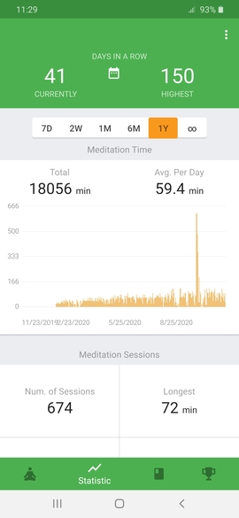

author: niplav, created: 2020-10-07, modified: 2025-02-15, language: english, status: notes, importance: 3, confidence: log
Various things I tried, why I tried them, the effects they had, and whether I recommend these things.
Soundtrack for this page: Fidget by Miracles of Modern Science.
Sometimes, I perform little (and not so little) informal experiments. Although I don't collect any data during the experiment, subjective reports on their effects might be helpful for other people. Don't take them too seriously.
When I was around 9 years old, I decided to create a counter in my head that would increment when I saw a car of the brand Smart. I did this for around half a year, eventually reaching over 6000 (I don't remember the exact number anymore, what a shame). During this time, I created some rules:
I remember location mattering a lot, a 2-week holiday in the US increasing the counter by only 1 or two, and a weekend in a big european city pushing the counter up by several hundred.
I don't remember my reasons for starting this. Perhaps I did it because Smarts are relatively recognizable and I was bored.
I think the effects on my life were (and are) pretty neutral, though my visual classifier for Smarts is still much better than for other cars. I also still get a little bolt of attention when I see a Smart.
Also, the Smart roadster looks kind of neat, together with the asthetic of the Tesla Cybertruck my preferred aesthetic for cars.
If you're a bored 9 year old, this is probably not too bad.
5.5/10
For two weeks in September 2018, I tried eating only every second day. This ruled out any kind of nutritional intake on fasting days except tap water.
I'd heard about people fasting for a week or more, and thought this might be an interesting little experiment to try. I had no specific reason for this particular spacing of fasting.
Apart from being quite hungry on the days when I didn't eat anything, and eating a lot on the days when I was allowed to eat, there were no interesting effects. I do not particularly recommend this.
3/10
From mid March 2019 to mid July 2019, I walked barefoot both inside the house and outside.
I recall having read some people gesturing toward barefoot walking having health benefits, but that was not my main reason for doing it, I wanted to see whether it had any direct impacts on the quality of my life.
I stopped walking barefoot after stepping into a glass shard for the second time.
(The problem were not big shards, those were avoidable and didn't cut when stepped on. Instead, small & basically invisible shards pose a bigger problem, because they're hard to detect and just as abundant.)
The main effects were:
Walking barefoot was kind of cool, especially the long-term hardening of my feet. That said, for most people the downsides probably outweigh the upsides by a lot. To my younger self, I would recommend doing it for 2 weeks in summer, and then stopping.
4/10
In October 2019, I decided to do all of my transportation either by foot or by bike. I kept this up until February 2020.
This resulted in me biking on average ~25km a day for four months (my way to university was ~20km, and sometimes I had to drive into the city centre, which was another 10km).
During the time on my bike I usually listened to podcasts on my IPod Shuffle, mostly the 80,000 Hours Podcast.
I tried this to test several different things. I wanted to see how independent of other methods of transportation I could be (public transport, car etc.). I also wanted to observe whether these amounts physical exercise and time spent outside (sometimes in the sun) would be beneficial to me (both in terms of falling asleep easier in the evening and becoming fitter).
I also wanted to see whether this was a good way of saving money for public transport.
I usually spent 2½ hours or more a day on my bike, very often under rough conditions (cold weather, wind, me being tired/exhausted). Preparation time for leaving the house was quite long: several minutes for packing the backpack, adequately tying my shoes, putting on warm clothes (but not too warm, since sometimes the weather was warm enough to being able to leave the jacket inside my backpack), putting in the earphones, then putting on the helmet, then gloves, and finally (if it was in the evening) putting the lights onto the bike.
It doesn't sound like much, but doing this ~4 times a day (different locations during the day) at two minutes, this cost me .
I was much hungrier in the evening, eating probably meals for 2 people.
I was usually very exhausted in the morning, making it harder to get out of bed, and also during the day. Due to this, couldn't put as much energy into university work as I would have wanted, leading to me receiving quite bad grades during the semester.
I didn't notice my physical fitness improving very much except my legs becoming much more muscular.
I had much less time during the day for hobbies and meeting friends.
On the whole, I do not recommend doing this at all. It was a mistake of me not aborting the experiment after a month, and the benefits were tiny to non-existent. I was more tired, had worse grades, less social contact, slept in longer and didn't become fitter during those four months. The money I saved by not having to use public transport was tiny in comparison.
The only scenario where I can imagine this being a good idea is if you truly enjoy riding your bike a lot, have a lot of free time and relatively short commutes.
The only positive effect of the whole experiment was that I listened to a whole lot of podcasts during that time.
1.5/10
I used to bite my nails quite a lot. This was both unsanitary and not very attractive, but for a long time I did not attack the problem systematically.
After talking with a friend about this, I realized that I had only tried trying to stop biting my nails, and wanted to instead systematically attack the issue.
I started by simply googling "How Do I Stop Biting My Nails" and read the first two search results.
My first approach was to simply cut my fingernails whenever they became too long.
I now bite my nails 80% less than before I started cutting them regularly (sometimes I forget cutting them, and then catch myself biting them after they have become too long, but this happens relatively rarely).
I more often bite the skin around my nails, but still less than before I was cutting them.
Although my nailbiting is not completely solved yet, I have made significant progress on something that had resisted many attempts at "just powering it through" (another win of systems over willpower). I am surprised I hadn't noticed in previous attempts at stopping to bite my nails that i actually had to cut them instead—highly obvious once you think about it for even a couple of seconds, but apparently not clear to myself in the moment.
I am glad I tried the "just google “How To X” and read the first couple of results" approach to a relatively pertinent problem in my life that was bugging me for a long time. I plan to attack other problems in my life similarly in the future.
7/10
Content moved here.
Long story short: It's great.
8/10
There is the case where a monk, having gone to the wilderness, to the shade of a tree, or to an empty building, sits down folding his legs crosswise, holding his body erect, and setting mindfulness to the fore. Always mindful, he breathes in; mindful he breathes out. Breathing in long, he discerns, ‘I am breathing in long’; or breathing out long, he discerns, ‘I am breathing out long.’ Or breathing in short, he discerns, ‘I am breathing in short’; or breathing out short, he discerns, ‘I am breathing out short.’
— Author unknown, “Ānāpānasati Sutta (MN 118)”, ca. -100
and he had forgotten that all life is only a set of pictures in the brain, which there is no difference betwixt those born of real things and those born of inward dreamings, and no cause to value the one above the other.
— Howard Phillips Lovecraft, “The Silver Key”, 1929
Around the end of 2019, I started meditating. I had read about jhanas on the blog Qualia Computing, especially in the post Investing Time and Resources in Happiness, and thought it would be worthwhile to try meditation.
I started by reading Mindfulness in Plain English, and sitting for around 20 to 30 minutes a day, doing simple concentration practice on the breath. I sometimes added 20 minutes or so of walking meditation, focusing on the sensations from the feet and legs. Over the course of 2020, I mostly continued my concentration practice, rarely adding some loving-kindness or noting. During that time, after enjoying the practice more and more, I expanded my meditation time to around 75 minutes a day.
As of November 2020, I have meditated 300 hours.

Note: I ascribe many positive changes in my life to my meditation practice. I feel like that is prudent, but inferring causality is very difficult (especially over long time horizons), and it is possible that I might be overrating my practice in its importance. That said, many of the positive effects coincide pretty well with me starting my practice, and seem to be similar to what other people are talking about.
Off the cushion, I noticed that my hedonic baseline increased by around 15% (estimate, if such a number is indeed meaningful). I have felt happier, more empathetic, more equanimous (and at the same time more energized). I have learned to avoid many negative and unproductive thought loops, and sometimes even addictive behavior (e.g. in relation with the internet).
I sometimes experience a "dropping down into reality moment", where I become acutely aware of the sensations in my body, or the sense of the space around me, or the silence around me. This is always quite enjoyable.
I also experience negative sensations much less often, and if I do, they last for a much shorter time and are less intense. For example, I have noticed an 80% (again, estimate) reduction in
The reduction of these negative states is partially (but not completely) responsible for the raising of my hedonic baseline.
If I experience such states, it has become much easier to negotiate with them by acknowledging their existence, observing them more closely, and then "sending them down into the body". (I am not sure how coercive this is, but at the moment, my best guess is that there is relatively little coercion involved).
Ironically, while my meditation practice has noticeably improved most aspects of my life, I do not notice as much progress in the quality of my meditation as I would have expected. I have the impression that I tend to experience less mind-wandering, and that my perception of sensations is somewhat more clear, but that might just be a corollary of me fixing my sleeping rhythm and not being quite tired during meditation.
Sometimes, most often during a one-hour sit, I enter a state that is quite pleasant and clear. In it, I have no internal monologue, and feel a pervasive inner silence (outer silence is also mostly present, though I can still perceive auditory perceptions). There is also no drive to do anything else/go anywhere else. Unfortunately, it always has disappeared after only a few minutes.
But these kinds of states are relatively rare, and most of my meditation sessions are like everyone else's: full of mind-wandering, short bursts of attention on the breath etc. I do, however, enjoy meditation more and more as time goes on.
Recommending meditation, especially in the amounts that I do, is a very risky move. Meditation can cause very negative states of mind, or lead to mental changes that lead to radical changes in lifestyle. I have not yet had any experience of e.g. the dukkha ñanas, but I have been well informed about them, and have decided that the risk they pose can be traded off against the benefits I have observed so far, and that other, more advanced people have talked about.
If my descriptions have stimulated your curiosity, I do recommend seeking out more information about meditation. If you are relatively analytical, I can recommend the /r/streamentry wiki, as well as the writings of Daniel M. Ingram.
I also particularly recommend Mindfulness in Plain English.
9/10
At the beginning of October 2020, I planned doing a 7-day meditation retreat at home. My initial plan was to do nothing but meditate for all 7 days, at ~10h of meditation a day. During that time, I planned on not leaving the house, using the internet, visiting friends etc.
I used this reddit post as an inspiration for my schedule.
I removed all electronic devices from my room, keeping only my smartphone (using it as a timer), but disabling nearly all apps & turning off wifi.
My schedule was to do sitting and walking meditation alternatingly, 1h each, and doing mostly concentration practice.
At that time I had meditated ~250h, and had read several times that retreats were the best option of inducing qualitative shifts in meditation practice. But I didn't want to plan & pay for a meditation retreat just yet, so I decided that I could try the cheaper option at home and see how it worked out.
I started the retreat off very strongly: Meditating for 10h each on the first two days. Unfortunately, the social environment was not ideal for intense practice, and I became less determined to continue practicing as the days went on. I meditated 8, 6, ½, and 4 hours on the next 4 days, leaving the seventh completely free.
However, the effects of doing intense concentration practice were still quite strong. I had some episodes of very clear & vivid mindfulness, following the breath easily for several minutes.
I did ½h of mettā bhāvanā, which convinced me to incorporate more loving-kindness meditation into daily practice as well.
On the evenings first and second day specifically, my head felt like a swarm of busy tiny insects were performing a great amount of labour inside of it—something was clearly happening, and I had the impression that a lot of neural connections were being built.
Although I failed to stay consistent during the time and did not practice as much as I wanted to, I am still very glad I did the retreat. My concentration practice was markedly better afterwards, and it has helped me in very subtle ways.
I now plan doing a retreat in the right social setting that encourages me to be more disciplined about my practice.
I would tentatively recommend aiming for 2/3 days of intense practice instead of 7, that seems a lot more doable on your own. But if you're especially enthusiastic, you might very well succeed where I failed.
7.5/10
Reddit user /u/Awarenesss posted a comment on the December 2020 Discussion thread on /r/slatestarcodex, asking for participants in a replication. I messaged them about my interest in participation, and they replied with the following instructions:
Stare at your face in a mirror continuously for 10:00 minutes in dim lighting conditions that still allow for the distinguishing of facial features. Move and blink as little as possible. Eliminate visual and audible distractions before starting.
The first time, I did not read the instructions carefully, and performed the experiment under bright light. I noticed that mistake, and repeated the experiment the next day under dim lighting.
I can pretty much report a null result: the ten minutes felt just like me looking at my own face.
I was somewhat tired (despite (or maybe because?) sleeping more than 9 hours the night before), and often lost focus on my face. I more often than not focused on certain features of my face, such as only the mouth, nose, or one of the eyes. Some of the time (more than usually) I was thinking about the attractiveness of my face (or the lack thereof).
At one point, while I was trying to focus on the whole of my face, for a brief moment it looked detached from the rest of my head (like a mask with my face being held infront of my head), and somewhat nearer to the mirror than the rest of my head, but that illusion quickly disappeared when I became more attentive.
Several factors might distort my report.
I am doing a somewhat intensive contemplative practice, and my perception is perhaps already slightly different from the modal person's
I have some psychedelic experiences, although the last happened more than 6 months ago, and seems to have had left relatively little long-lasting effects
I remember reading about the experiment some time ago, and I'm vaguely aware that an often-reported result is that people looking at other peoples' faces or into the mirror report the faces transforming into frightening grimaces.
I was disturbed mid-experiment by a person living with me, but the distraction was not significant enough for me to consider repeating the experiment again.
It could be a good concentration practice, perhaps similar to Kasina meditation, because Everything is Kind of Like Meditation™.
Otherwise, I wouldn't see the point in it, other than doing someone else a favour in their experiment.
4.5/10
/u/Awarenesss has published the results of their study here.
Chapin 2021 reports having cured his post-COVID-19 anosmia by taking LSD.
I believe I have encountered a similarly strong reaction to taking LSD: I currently put ~15% on my second LSD trip causing more than half of my past erectile dysfunction (which consists of a mix of psychological and physiological issues, occurring both during masturbation and attempted sex, but not always and to varying degrees, and beware: I didn't have a formal diagnosis). My ED disappeared in early 2023 (~1½ years after it first appeared), and I now guess guess that it was simply due to nervousness.
The potential causal pathways from the LSD trip to erectile dysfunction are hard to convey to third parties, and quite speculative. I attribute a strong body load, especially in the genital area, together with a general feeling of discomfort and feeling of "wanting to get somewhere but not knowing where"-ness, as well as solidifying a psychological unease about sexuality in patterns of tension in the genital area to causing the symptoms. I am very tempted to also put the word "trauma" somewhere in the previous sentence. These experiences reoccurred on my 3rd and 4th trip, although less strongly (I continued taking LSD because I initially believed the results to be largely positive).
However, inferring causality is hard, and humans are prone to self-deception and confabulation, so adjust accordingly.
Even though I enjoyed many parts of my LSD trips, I would advise my past self against repeating them.